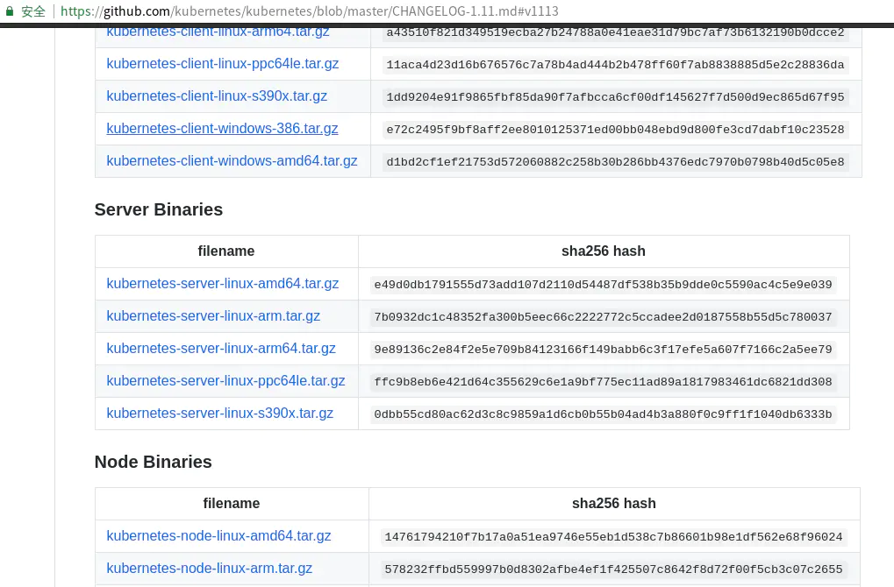
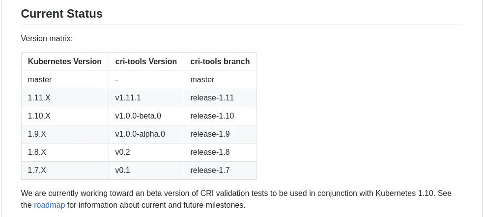

- 01 开篇： Kubernetes 是什么以及为什么需要它.md.html
- 02 初步认识：Kubernetes 基础概念.md.html
- 03 宏观认识：整体架构.md.html
- 04 搭建 Kubernetes 集群 - 本地快速搭建.md.html
- 05 动手实践：搭建一个 Kubernetes 集群 - 生产可用.md.html
- 06 集群管理：初识 kubectl.md.html
- 07 集群管理：以 Redis 为例-部署及访问.md.html
- 08 安全重点 认证和授权.md.html
- 09 应用发布：部署实际项目.md.html
- 10 应用管理：初识 Helm.md.html
- 11 部署实践：以 Helm 部署项目.md.html
- 12 庖丁解牛：kube-apiserver.md.html
- 13 庖丁解牛：etcd.md.html
- 14 庖丁解牛：controller-manager.md.html
- 15 庖丁解牛：kube-scheduler.md.html
- 16 庖丁解牛：kubelet.md.html
- 17 庖丁解牛：kube-proxy.md.html
- 18 庖丁解牛：Container Runtime （Docker）.md.html
- 19 Troubleshoot.md.html
- 20 扩展增强：Dashboard.md.html
- 21 扩展增强：CoreDNS.md.html
- 22 服务增强：Ingress.md.html
- 23 监控实践：对 K8S 集群进行监控.md.html
- 24 总结.md.html
05 动手实践：搭建一个 Kubernetes 集群 - 生产可用
通过上一节的学习，我们快速的使用 Minikube 搭建了一个本地可用的 K8S 集群。默认情况下，节点是一个虚拟机实例，我们可以在上面体验一些基本的功能。
大多数人的需求并不只是包含一个虚拟机节点的本地测试集群，而是一个可在服务器运行，可自行扩/缩容，具备全部功能的，达到生产可用的集群。
K8S 集群的搭建，一直让很多人头疼，本节我们来搭建一个生产可用的集群，便于后续的学习或使用。
方案选择
K8S 生产环境可用的集群方案有很多，本节我们选择一个 Kubernetes 官方推荐的方案 kubeadm 进行搭建。
kubeadm 是 Kubernetes 官方提供的一个 CLI 工具，可以很方便的搭建一套符合官方最佳实践的最小化可用集群。当我们使用 kubeadm 搭建集群时，集群可以通过 K8S 的一致性测试，并且 kubeadm 还支持其他的集群生命周期功能，比如升级/降级等。
我们在此处选择 kubeadm ，因为我们可以不用过于关注集群的内部细节，便可以快速的搭建出生产可用的集群。我们可以通过后续章节的学习，快速上手 K8S ，并学习到 K8S 的内部原理。在此基础上，想要在物理机上完全一步步搭建集群，便轻而易举。
安装基础组件
前期准备
使用 kubeadm 前，我们需要提前做一些准备。
-
我们需要禁用 swap。通过之前的学习，我们知道每个节点上都有个必须的组件，名为
kubelet，自 K8S 1.8 开始，启动kubelet时，需要禁用swap。或者需要更改kubelet的启动参数--fail-swap-on=false。虽说可以更改参数让其可用，但是我建议还是禁用
swap除非你的集群有特殊的需求，比如：有大内存使用的需求，但又想节约成本；或者你知道你将要做什么，否则可能会出现一些非预期的情况，尤其是做了内存限制的时候，当某个 Pod 达到内存限制的时候，它可能会溢出到 swap 中，这会导致 K8S 无法正常进行调度。如何禁用：
- 使用
sudo cat /proc/swaps验证 swap 配置的设备和文件。 - 通过
swapoff -a关闭 swap 。 - 使用
sudo blkid或者sudo lsblk可查看到我们的设备属性，请注意输出结果中带有swap字样的信息。 - 将
/etc/fstab中和上一条命令中输出的，和 swap 相关的挂载点都删掉，以免在机器重启或重挂载时，再挂载swap分区。
执行完上述操作，
swap便会被禁用，当然你也可以再次通过上述命令，或者free命令来确认是否还有swap存在。[[email protected] ~]# free total used free shared buff/cache available Mem: 1882748 85608 1614836 16808 182304 1630476 Swap: 0 0 0 - 使用
-
通过
sudo cat /sys/class/dmi/id/product_uuid可查看机器的product_uuid请确保要搭建集群的所有节点的product_uuid均不相同。同时所有节点的 Mac 地址也不能相同，通过ip a或者ifconfig -a可进行查看。我们在第二章提到过，每个 Node 都有一些信息会被记录进集群内，而此处我们需要保证的这些唯一的信息，便会记录在集群的
nodeInfo中，比如product_uuid在集群内以systemUUID来表示。具体信息我们可以通过集群的API Server获取到，在后面的章节会详细讲述。 -
第三章中，我们已经谈过 K8S 是 C/S 架构，在启动后，会固定监听一些端口用于提供服务。可以通过
sudo netstat -ntlp |grep -E '6443|23[79,80]|1025[0,1,2]'查看这些端口是否被占用，如果被占用，请手动释放。如果你执行上述命令时，提示
command not found，则表明你需要先安装netstat，在 CentOS 系统中需要通过sudo yum install net-tools安装，而在 Debian/Ubuntu 系统中，则需要通过sudo apt install net-tools进行安装。 -
前面我们也提到了，我们需要一个容器运行时，通常情况下是
Docker，我们可以通过官方的 Docker 文档 进行安装，安装完成后记得启动服务。官方推荐使用
17.03，但我建议你可以直接安装18.03或者更新的版本，因为17.03版本的 Docker 已经在 2018 年 3 月EOL（End Of Life）了。对于更新版本的 Docker，虽然 K8S 尚未在新版本中经过大量测试，但毕竟新版本有很多 Bugfix 和新特性的增加，也能规避一些可能遇到的问题（比如个别情况下 container 不会自动删除的情况 (17.09) ）。另外，由于 Docker 的 API 都是带有版本的，且有良好的兼容性，当使用低版本 API 请求时会自动降级，所以一般情况下也不会有什么问题。
安装 kubectl
第三章中，我们已经说过 kubectl 是集群的客户端，我们现在搭建集群时，也必须要安装它，用于验证集群功能。
安装步骤在第 4 章已经详细说明了，此处不做赘述，可查阅第 4 章或参考下面的内容。
安装 kubeadm 和 kubelet
首先是版本的选择，我们可以通过下面的命令获取到当前的 stable 版本号。要访问这个地址，需要自行处理网络问题或使用我后面提供的解决办法。
[[email protected] ~]# curl -sSL https://dl.k8s.io/release/stable.txt
v1.11.3
下载二进制包，并通过 kubeadm version 验证版本是否正确。
[[email protected] ~]# curl -sSL https://dl.k8s.io/release/v1.11.3/bin/linux/amd64/kubeadm > /usr/bin/kubeadm
[[email protected] ~]# chmod a+rx /usr/bin/kubeadm
[[email protected] ~]# kubeadm version
kubeadm version: &version.Info{Major:"1", Minor:"11", GitVersion:"v1.11.3", GitCommit:"a4529464e4629c21224b3d52edfe0ea91b072862", GitTreeState:"clean", BuildDate:"2018-09-09T17:59:42Z", GoVersion:"go1.10.3", Compiler:"gc", Platform:"linux/amd64"}
当然，我们其实可以使用如同上一章的方式，直接进入到 kubernetes 的官方仓库，找到我们所需版本 v1.11.3 下载 Server Binaries，如下图：

终端下可使用如下方式下载：
[[email protected] tmp]# wget -q https://dl.k8s.io/v1.11.3/kubernetes-server-linux-amd64.tar.gz
对于国内用户，我已经准备了下面的方式，方便使用。
链接: https://pan.baidu.com/s/1FSEcEUplQQGsjyBIZ6j2fA 提取码: cu4s
下载完成后，验证文件是否正确无误，验证通过后进行解压。
[[email protected] tmp]# echo 'e49d0db1791555d73add107d2110d54487df538b35b9dde0c5590ac4c5e9e039 kubernetes-server-linux-amd64.tar.gz' | sha256sum -c -
kubernetes-server-linux-amd64.tar.gz: 确定
[[email protected] tmp]# tar -zxf kubernetes-server-linux-amd64.tar.gz
[[email protected] tmp]# ls kubernetes
addons kubernetes-src.tar.gz LICENSES server
[[email protected] tmp]# ls kubernetes/server/bin/ | grep -E 'kubeadm|kubelet|kubectl'
kubeadm
kubectl
kubelet
可以看到在 server/bin/ 目录下有我们所需要的全部内容，将我们所需要的 kubeadm kubectl kubelet 等都移动至 /usr/bin 目录下。
[[email protected] tmp]# mv kubernetes/server/bin/kube{adm,ctl,let} /usr/bin/
[[email protected] tmp]# ls /usr/bin/kube*
/usr/bin/kubeadm /usr/bin/kubectl /usr/bin/kubelet
[[email protected] tmp]# kubeadm version
kubeadm version: &version.Info{Major:"1", Minor:"11", GitVersion:"v1.11.3", GitCommit:"a4529464e4629c21224b3d52edfe0ea91b072862", GitTreeState:"clean", BuildDate:"2018-09-09T17:59:42Z", GoVersion:"go1.10.3", Compiler:"gc", Platform:"linux/amd64"}
[[email protected] tmp]# kubectl version --client
Client Version: version.Info{Major:"1", Minor:"11", GitVersion:"v1.11.3", GitCommit:"a4529464e4629c21224b3d52edfe0ea91b072862", GitTreeState:"clean", BuildDate:"2018-09-09T18:02:47Z", GoVersion:"go1.10.3", Compiler:"gc", Platform:"linux/amd64"}
[[email protected] tmp]# kubelet --version
Kubernetes v1.11.3
可以看到我们所需的组件，版本均为 v1.11.3 。
配置
为了在生产环境中保障各组件的稳定运行，同时也为了便于管理，我们增加对 kubelet 的 systemd 的配置，由 systemd 对服务进行管理。
配置 kubelet
[[email protected] tmp]# cat <<'EOF' > /etc/systemd/system/kubelet.service
[Unit]
Description=kubelet: The Kubernetes Agent
Documentation=http://kubernetes.io/docs/
[Service]
ExecStart=/usr/bin/kubelet
Restart=always
StartLimitInterval=0
RestartSec=10
[Install]
WantedBy=multi-user.target
EOF
[[email protected] tmp]# mkdir -p /etc/systemd/system/kubelet.service.d
[[email protected] tmp]# cat <<'EOF' > /etc/systemd/system/kubelet.service.d/kubeadm.conf
[Service]
Environment="KUBELET_KUBECONFIG_ARGS=--bootstrap-kubeconfig=/etc/kubernetes/bootstrap-kubelet.conf --kubeconfig=/etc/kubernetes/kubelet.conf"
Environment="KUBELET_CONFIG_ARGS=--config=/var/lib/kubelet/config.yaml"
EnvironmentFile=-/var/lib/kubelet/kubeadm-flags.env
EnvironmentFile=-/etc/default/kubelet
ExecStart=
ExecStart=/usr/bin/kubelet $KUBELET_KUBECONFIG_ARGS $KUBELET_CONFIG_ARGS $KUBELET_KUBEADM_ARGS $KUBELET_EXTRA_ARGS
EOF
[[email protected] tmp]# systemctl enable kubelet
Created symlink from /etc/systemd/system/multi-user.target.wants/kubelet.service to /etc/systemd/system/kubelet.service.
在这里我们添加了 kubelet 的 systemd 配置，然后添加了它的 Drop-in 文件，我们增加的这个 kubeadm.conf 文件，会被 systemd 自动解析，用于复写 kubelet 的基础 systemd 配置，可以看到我们增加了一系列的配置参数。在第 17 章中，我们会对 kubelet 做详细剖析，到时再进行解释。
启动
此时，我们的前期准备已经基本完成，可以使用 kubeadm 来创建集群了。别着急，在此之前，我们还需要安装两个工具，名为crictl 和 socat。
安装前置依赖 crictl
crictl 包含在 cri-tools 项目中，这个项目中包含两个工具：
crictl是kubeletCRI (Container Runtime Interface) 的 CLI 。critest是kubeletCRI 的测试工具集。
安装可以通过进入 cri-tools 项目的 Release 页面 ，根据项目 README 文件中的版本兼容关系，选择自己所需的安装包，下载即可，由于我们安装 K8S 1.11.3 所以选择最新的 v1.11.x 的安装包。

[[email protected] ~]# wget https://github.com/kubernetes-sigs/cri-tools/releases/download/v1.11.1/crictl-v1.11.1-linux-amd64.tar.gz
[[email protected] ~]# echo 'ccf83574556793ceb01717dc91c66b70f183c60c2bbec70283939aae8fdef768 crictl-v1.11.1-linux-amd64.tar.gz' | sha256sum -c -
crictl-v1.11.1-linux-amd64.tar.gz: 确定
[[email protected] ~]# tar zxvf crictl-v1.11.1-linux-amd64.tar.gz
[[email protected] ~]# mv crictl /usr/bin/
安装前置依赖 socat
socat 是一款很强大的命令行工具，可以建立两个双向字节流并在其中传输数据。这么说你也许不太理解，简单点说，它其中的一个功能是可以实现端口转发。
无论在 K8S 中，还是在 Docker 中，如果我们需要在外部访问服务，端口转发是个必不可少的部分。当然，你可能会问基本上没有任何地方提到说 socat 是一个依赖项啊，别急，我们来看下 K8S 的源码便知道了。
func portForward(client libdocker.Interface, podSandboxID string, port int32, stream io.ReadWriteCloser) error {
// 省略了和 socat 无关的代码
socatPath, lookupErr := exec.LookPath("socat")
if lookupErr != nil {
return fmt.Errorf("unable to do port forwarding: socat not found.")
}
args := []string{"-t", fmt.Sprintf("%d", containerPid), "-n", socatPath, "-", fmt.Sprintf("TCP4:localhost:%d", port)}
// ...
}
socat 的安装很简单 CentOS 下执行 sudo yum install -y socat ，Debian/Ubuntu 下执行 sudo apt-get install -y socat 即可完成安装。
初始化集群
所有的准备工作已经完成，我们开始真正创建一个 K8S 集群。 注意：如果需要配置 Pod 网络方案，请先阅读本章最后的部分 配置集群网络
[[email protected] ~]# kubeadm init
[init] using Kubernetes version: v1.11.3
[preflight] running pre-flight checks
...
I0920 01:09:09.602908 17966 kernel_validator.go:81] Validating kernel version
I0920 01:09:09.603001 17966 kernel_validator.go:96] Validating kernel config
[WARNING SystemVerification]: docker version is greater than the most recently validated version. Docker version: 18.03.1-ce. Max validated version: 17.03
[preflight/images] Pulling images required for setting up a Kubernetes cluster
[preflight/images] This might take a minute or two, depending on the speed of your internet connection
[preflight/images] You can also perform this action in beforehand using 'kubeadm config images pull'
[kubelet] Writing kubelet environment file with flags to file "/var/lib/kubelet/kubeadm-flags.env"
[kubelet] Writing kubelet configuration to file "/var/lib/kubelet/config.yaml"
[preflight] Activating the kubelet service
[certificates] Generated ca certificate and key.
[certificates] Generated apiserver certificate and key.
...
[markmaster] Marking the node master as master by adding the label "node-role.kubernetes.io/master=''"
[markmaster] Marking the node master as master by adding the taints [node-role.kubernetes.io/master:NoSchedule]
[bootstraptoken] creating the "cluster-info" ConfigMap in the "kube-public" namespace
[addons] Applied essential addon: CoreDNS
[addons] Applied essential addon: kube-proxy
Your Kubernetes master has initialized successfully!
...
You can now join any number of machines by running the following on each node
as root:
kubeadm join 202.182.112.120:6443 --token t14kzc.vjurhx5k98dpzqdc --discovery-token-ca-cert-hash sha256:d64f7ce1af9f9c0c73d2d737fd0095456ad98a2816cb5527d55f984c8aa8a762
以上省略了部分输出。
我们从以上日志中可以看到，创建集群时会检查内核版本，Docker 版本等信息，这里提示 Docker 版本较高，我们忽略这个提示。
然后会下载一些镜像，当然这里提示我们可以通过执行 kubeadm config images pull 提前去下载镜像。我们来看下
[[email protected] ~]# kubeadm config images pull
[config/images] Pulled k8s.gcr.io/kube-apiserver-amd64:v1.11.3
[config/images] Pulled k8s.gcr.io/kube-controller-manager-amd64:v1.11.3
[config/images] Pulled k8s.gcr.io/kube-scheduler-amd64:v1.11.3
[config/images] Pulled k8s.gcr.io/kube-proxy-amd64:v1.11.3
[config/images] Pulled k8s.gcr.io/pause:3.1
[config/images] Pulled k8s.gcr.io/etcd-amd64:3.2.18
[config/images] Pulled k8s.gcr.io/coredns:1.1.3
对于国内用户使用 kubeadm 创建集群时，可能遇到的问题便是这些镜像下载不下来，最终导致创建失败。所以我在国内的代码托管平台提供了一个仓库 可以 clone 该项目，进入 v1.11.3 目录，对每个 tar 文件执行 sudo docker load -i xx.tar 即可将镜像导入。
或者可使用阿里云提供的镜像，只需要将 k8s.gcr.io 替换为 registry.aliyuncs.com/google_containers ，执行 docker pull 后再 docker tag 重 tag 即可。
继续看上面的日志，kubeadm init 执行起见生成了一些文件，而这些文件我们先前在 kubelet server 的 Drop-in 的配置中配置过。
生成这些配置文件后，将启动 kubelet 服务，生成一系列的证书和相关的配置之类的，并增加一些扩展。
最终集群创建成功，并提示可在任意机器上使用指定命令加入集群。
验证
在上面的步骤中，我们已经安装了 K8S 的 CLI 工具 kubectl，我们使用此工具查看集群信息：
[[email protected] ~]# kubectl cluster-info
Kubernetes master is running at http://localhost:8080
To further debug and diagnose cluster problems, use 'kubectl cluster-info dump'.
The connection to the server localhost:8080 was refused - did you specify the right host or port?
[[email protected] ~]# kubectl get nodes
The connection to the server localhost:8080 was refused - did you specify the right host or port?
使用 kubectl cluster-info 可查看集群 master 和集群服务的地址，但我们也注意到最后有一句报错 connection ... refused 很显然这里存在错误。
kubectl get nodes 可查看集群中 Node 信息，同样报错。
在上面我们提到过，K8S 默认会监听一些端口，但并不是 8080 端口，由此可知，我们的 kubectl 配置有误。
配置 kubectl
-
使用
kubectl的参数--kubeconfig或者环境变量KUBECONFIG。[[email protected] ~]# kubectl --kubeconfig /etc/kubernetes/admin.conf get nodes NAME STATUS ROLES AGE VERSION master NotReady master 13h v1.11.3 [[email protected] ~]# [[email protected] ~]# KUBECONFIG=/etc/kubernetes/admin.conf kubectl get nodes NAME STATUS ROLES AGE VERSION master NotReady master 13h v1.11.3 -
使用传参的方式未免太繁琐，我们也可以更改默认配置文件
[[email protected] ~]# mkdir -p $HOME/.kube [[email protected] ~]# sudo cp -i /etc/kubernetes/admin.conf $HOME/.kube/config [[email protected] ~]# sudo chown $(id -u):$(id -g) $HOME/.kube/config [[email protected] ~]# kubectl get nodes NAME STATUS ROLES AGE VERSION master NotReady master 13h v1.11.3
配置集群网络
通过上面的配置，我们已经可以正常获取 Node 信息。但通过第 2 章，我们了解到 Node 都有 status，而此时我们唯一的 Node 是 NotReady。我们通过给 kubectl 传递 -o 参数更改输出格式，查看更详细的情况。
[[email protected] ~]# kubectl get nodes -o yaml
apiVersion: v1
items:
- apiVersion: v1
kind: Node
...
status:
addresses:
- address: master
type: Hostname
...
- lastHeartbeatTime: 2018-09-20T14:45:45Z
lastTransitionTime: 2018-09-20T01:09:48Z
message: 'runtime network not ready: NetworkReady=false reason:NetworkPluginNotReady
message:docker: network plugin is not ready: cni config uninitialized'
reason: KubeletNotReady
status: "False"
type: Ready
...
从以上输出中，我们可以看到 master 处于 NotReady 的原因是 network plugin is not ready: cni config uninitialized 那么 CNI 是什么呢？CNI 是 Container Network Interface 的缩写，是 K8S 用于配置 Linux 容器网络的接口规范。
关于网络的选择，我们此处不做过多介绍，我们暂时选择一个被广泛使用的方案 flannel。 但注意，如果要使用 flannel 需要在 kubeadm init 的时候，传递 --pod-network-cidr=10.244.0.0/16 参数。另外需要查看 /proc/sys/net/bridge/bridge-nf-call-iptables 是否已设置为 1。 可以通过 sysctl net.bridge.bridge-nf-call-iptables=1 更改配置。
我们在前面创建集群时，并没有传递任何参数。为了能使用 flannel , 所以我们需要先将集群重置。使用 kubeadm reset
[[email protected] ~]# kubeadm reset
[reset] WARNING: changes made to this host by 'kubeadm init' or 'kubeadm join' will be reverted.
[reset] are you sure you want to proceed? [y/N]: y
[preflight] running pre-flight checks
[reset] stopping the kubelet service
[reset] unmounting mounted directories in "/var/lib/kubelet"
[reset] removing kubernetes-managed containers
[reset] cleaning up running containers using crictl with socket /var/run/dockershim.sock
[reset] failed to list running pods using crictl: exit status 1. Trying to use docker instead[reset] deleting contents of stateful directories: [/var/lib/kubelet /etc/cni/net.d /var/lib/dockershim /var/run/kubernetes /var/lib/etcd]
[reset] deleting contents of config directories: [/etc/kubernetes/manifests /etc/kubernetes/pki]
[reset] deleting files: [/etc/kubernetes/admin.conf /etc/kubernetes/kubelet.conf /etc/kubernetes/bootstrap-kubelet.conf /etc/kubernetes/controller-manager.conf /etc/kubernetes/scheduler.conf]
重新初始化集群，并传递参数。
[[email protected] ~]# kubeadm init --pod-network-cidr=10.244.0.0/16
[init] using Kubernetes version: v1.11.3
...
Your Kubernetes master has initialized successfully!
注意：这里会重新生成相应证书等配置，需要按上面的内容重新配置 kubectl。
此时，CNI 也尚未初始化完成，我们还需完成以下的步骤。
# 注意，这里的 flannel 配置仅适用于 1.11 版本的 K8S，若安装其他版本的 K8S 需要替换掉此链接
[[email protected] ~]# kubectl apply -f https://raw.githubusercontent.com/coreos/flannel/v0.10.0/Documentation/kube-flannel.yml
clusterrole.rbac.authorization.k8s.io/flannel created
clusterrolebinding.rbac.authorization.k8s.io/flannel created
serviceaccount/flannel created
configmap/kube-flannel-cfg created
daemonset.extensions/kube-flannel-ds created
稍等片刻，再次查看 Node 状态：
[[email protected] ~]# kubectl get nodes
NAME STATUS ROLES AGE VERSION
master Ready master 12m v1.11.3
可以看到 status 已经是 Ready 状态。根据第 3 章的内容，我们知道 K8S 中最小的调度单元是 Pod 我们来看下集群中现有 Pod 的状态。
[[email protected] ~]# kubectl get pods --all-namespaces
NAMESPACE NAME READY STATUS RESTARTS AGE
kube-system coredns-78fcdf6894-h7pkc 0/1 ContainerCreating 0 12m
kube-system coredns-78fcdf6894-lhlks 0/1 ContainerCreating 0 12m
kube-system etcd-master 1/1 Running 0 5m
kube-system kube-apiserver-master 1/1 Running 0 5m
kube-system kube-controller-manager-master 1/1 Running 0 5m
kube-system kube-flannel-ds-tqvck 1/1 Running 0 6m
kube-system kube-proxy-25tk2 1/1 Running 0 12m
kube-system kube-scheduler-master 1/1 Running 0 5m
我们发现有两个 coredns 的 Pod 是 ContainerCreating 的状态，但并未就绪。根据第 3 章的内容，我们知道 Pod 实际会有一个调度过程，此处我们暂且不论，后续章节再对此进行解释。
新增 Node
我们按照刚才执行完 kubeadm init 后，给出的信息，在新的机器上执行 kubeadm join 命令。
[[email protected] ~]# kubeadm join 202.182.112.120:6443 --token t14kzc.vjurhx5k98dpzqdc --discovery-token-ca-cert-hash sha256:d64f7ce1af9f9c0c73d2d737fd0095456ad98a2816cb5527d55f984c8aa8a762
[preflight] running pre-flight checks
[WARNING RequiredIPVSKernelModulesAvailable]: the IPVS proxier will not be used, because the following required kernel modules are not loaded: [ip_vs ip_vs_rr ip_vs_wrr ip_vs_sh] or no builtin kernel ipvs support: map[ip_vs:{} ip_vs_rr:{} ip_vs_wrr:{} ip_vs_sh:{} nf_conntrack_ipv4:{}]
you can solve this problem with following methods:
1. Run 'modprobe -- ' to load missing kernel modules;
2. Provide the missing builtin kernel ipvs support
I0921 04:00:54.805439 10677 kernel_validator.go:81] Validating kernel version
I0921 04:00:54.805604 10677 kernel_validator.go:96] Validating kernel config
[WARNING SystemVerification]: docker version is greater than the most recently validated version. Docker version: 18.03.1-ce. Max validated version: 17.03
[discovery] Trying to connect to API Server "202.182.112.120:6443"
[discovery] Created cluster-info discovery client, requesting info from "https://202.182.112.120:6443"
[discovery] Requesting info from "https://202.182.112.120:6443" again to validate TLS against the pinned public key
[discovery] Cluster info signature and contents are valid and TLS certificate validates against pinned roots, will use API Server "202.182.112.120:6443"
[discovery] Successfully established connection with API Server "202.182.112.120:6443"
[kubelet] Downloading configuration for the kubelet from the "kubelet-config-1.11" ConfigMap in the kube-system namespace
[kubelet] Writing kubelet configuration to file "/var/lib/kubelet/config.yaml"
[kubelet] Writing kubelet environment file with flags to file "/var/lib/kubelet/kubeadm-flags.env"
[preflight] Activating the kubelet service
[tlsbootstrap] Waiting for the kubelet to perform the TLS Bootstrap...
[patchnode] Uploading the CRI Socket information "/var/run/dockershim.sock" to the Node API object "node1" as an annotation
This node has joined the cluster:
* Certificate signing request was sent to master and a response
was received.
* The Kubelet was informed of the new secure connection details.
Run 'kubectl get nodes' on the master to see this node join the cluster.
上面的命令执行完成，提示已经成功加入集群。 此时，我们在 master 上查看下当前集群状态。
[[email protected] ~]# kubectl get nodes
NAME STATUS ROLES AGE VERSION
master Ready master 12m v1.11.3
node1 Ready <none> 7m v1.11.3
可以看到 node1 已经加入了集群。
总结
在本节中，我们选择官方推荐的 kubeadm 工具在服务器上搭建了一套有两个节点的集群。
kubeadm 可以自动的拉取相关组件的 Docker 镜像，并将其“组织”起来，免去了我们逐个部署相关组件的麻烦。
我们首先学习到了部署 K8S 时需要对系统做的基础配置，其次安装了一些必要的工具，以便 K8S 的功能可正常运行。
其次，我们学习到了 CNI 相关的知识，并在集群中部署了 flannel 网络方案。
最后，我们学习了增加 Node 的方法，以便后续扩展集群。
集群搭建方面的学习暂时告一段落，但这并不是结束，这才是真正的开始，从下一章开始，我们要学习集群管理相关的内容，学习如何真正使用 K8S 。